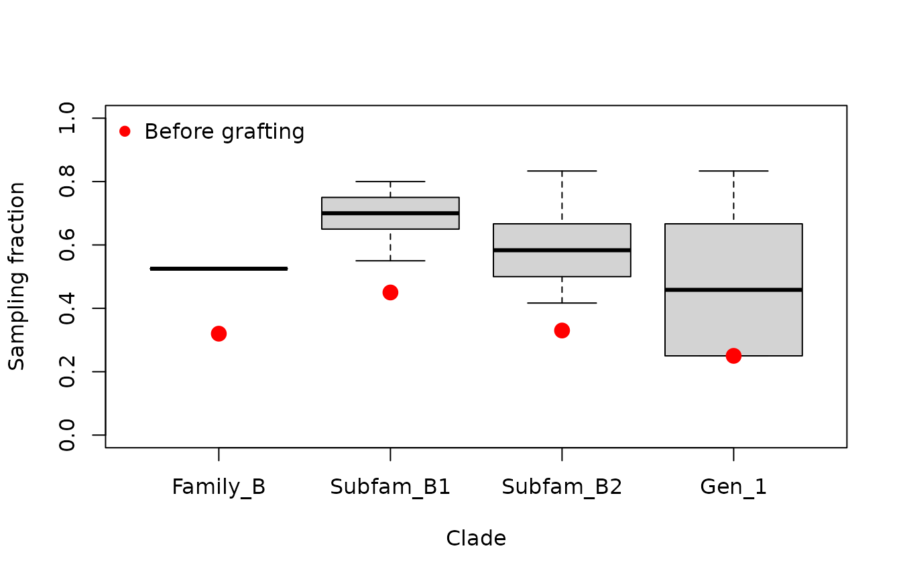

Check the grafting plan and the grafted phylogenies
Maël Doré
2026-11-27
Source:vignettes/check_grafting.Rmd
check_grafting.RmdGrafting is constrained (target clades, allowed states, …) and stochastic (divergence ages and positions are drawn from statistical distributions): it is worth checking that your grafting plan is feasible before grafting, that the constraints were respected after grafting. In addition, you may wish to check whether the resulting grafted phylogenies are consistent with what you expect in term of grafting positions, sampling fractions, and fit of diversification models.
This tutorial explains how to perform a priori and a posterior checks of grafted phylogenies, and detail how to read and interpret the outputs of the dedicated checking functions provided in the phylograftR package:
| Function | When | What it tells you | Section |
|---|---|---|---|
check_grafting_plan() |
before grafting | can each lineage be grafted with its constraints? | 1 |
check_grafting_constraints() |
after grafting | were all the constraints respected in each grafted phylogeny? | 2 |
extract_grafting_info() |
after grafting | where and when was each lineage grafted? | 3 |
extract_sampling_info() |
after grafting | what are the clade-specific sampling fractions after grafting? | 4 |
extract_BD_model_summary() |
after grafting | which birth-death models were used to draw the ages? | 5 |
0/ Setup
We use the toy backbone with its toy stochastic map (one
map), and 5 stochastic maps sampled from the
tip data to illustrate the checks with many maps (see
vignette("main_workflow") and
vignette("prepare_stochastic_maps")).
Helper functions build the lists of missing taxa to graft.
data(toy_backbone)
data(toy_simmap)
# One map: toy_simmap (states: blue, green, red)
# Many maps: sample 5 stochastic maps from the tip data, with an equal-rates model of evolution
tip_data <- phytools::getStates(toy_simmap, type = "tips")
set.seed(1234)
simmaps <- phytools::make.simmap(tree = toy_backbone, x = tip_data[toy_backbone$tip.label],
model = "ER", nsim = 5, message = FALSE)
class(simmaps)
#> [1] "multiSimmap" "multiPhylo"
# Helper 1: build a missing_taxa_list with n taxa to graft within a target clade defined by tips
make_taxa_list <- function(n, target_tips, prefix, allowed_states = NULL, start = 1)
{
taxa <- paste0(prefix, seq(start, length.out = n))
out <- list(Taxon_name = taxa, Target_clade = setNames(rep(list(target_tips), n), taxa))
if (!is.null(allowed_states)) out$allowed_states <- setNames(rep(list(allowed_states), n), taxa)
return(out)
}
# Helper 2: combine several lists of missing taxa
combine_lists <- function(...)
{
lists <- list(...)
out <- list(Taxon_name = unlist(lapply(lists, `[[`, "Taxon_name")),
Target_clade = do.call(c, lapply(lists, `[[`, "Target_clade")))
out$allowed_states <- do.call(c, lapply(lists, function(x)
{
if (is.null(x$allowed_states)) setNames(rep(list(NULL), length(x$Taxon_name)), x$Taxon_name) else x$allowed_states
}))
return(out)
}1/ Before grafting: check_grafting_plan()
check_grafting_plan() verifies that each lineage
can be grafted with its constraints, without grafting
anything. For each taxon, it identifies the branches of its
target clade available for grafting, after removing the excluded
subclades; it checks that there are branch pieces in the allowed
states in the stochastic map, and reports the proportion of
branch pieces that are available for grafting within the time
window of the target clade. It returns one row per taxon, and
prints a summary.
The goal of this function is to evaluate potential issues before grafting and adjust the constraints before running any potentially time-consuming task that would be deem to failure.
Check the plan
Here, as an illustration, We build a list of five taxa to graft representing different situations:
-
Fam_blue1andFam_blue2: grafted withinFamily_B, in the state “blue”; -
Small_sp1: grafted withinGen_1, a small clade of 3 tips; -
Narrow_sp1: grafted withinSubfam_B2, in the state “red”, which is rare in this clade; -
Mistake_sp1: grafted withinGen_1, in the state “red”: a mistake, as no branch of this target clade is red.
# ------ Check the plan with one stochastic map ------ #
# Build the list of missing taxa
taxa_blue <- make_taxa_list(n = 2, target_tips = c("t8", "t22"), prefix = "Fam_blue",
allowed_states = "blue")
taxa_small <- make_taxa_list(n = 1, target_tips = c("t13", "t27"), prefix = "Small_sp")
taxa_narrow <- make_taxa_list(n = 1, target_tips = c("t5", "t22"), prefix = "Narrow_sp",
allowed_states = "red")
taxa_mistake <- make_taxa_list(n = 1, target_tips = c("t13", "t27"), prefix = "Mistake_sp",
allowed_states = "red")
taxa_list <- combine_lists(taxa_blue, taxa_small, taxa_narrow, taxa_mistake)
# Check the plan with the toy stochastic map
plan_one <- check_grafting_plan(phy = toy_backbone, missing_taxa_list = taxa_list, simmap = toy_simmap)
#> Grafting plan: 5 taxa
#> - Can be grafted: 4/5
#> - Cannot be grafted (1):
#> allowed_states 1
#> e.g., Mistake_sp1
#> - Share of the available branches in allowed states (feasible taxa): min 4.3%, median 30.8%
#> - Share of the time window with grafting possible (feasible taxa): min 5.5%, median 65.3%
#> - Below 'min_valid_fraction' = 0.1 (1): Narrow_sp1
#> - Target clades smaller than 'min_tips' = 5 (birth-death model fitted on an enclosing clade): 3/5; enclosing clades of 8 to 13 tips in the backbone; in practice, the clade used can be nested within them, as previously grafted taxa count towards 'min_tips'
#> => Some cannot be grafted with these constraints (see the table)
# The table has one row per taxon: the main columns are
plan_one[, c("Taxon_name", "target_n_tips", "allowed_states",
"valid_fraction", "time_coverage", "feasible", "cause")]
#> Taxon_name target_n_tips allowed_states valid_fraction time_coverage
#> 1 Fam_blue1 13 blue 0.30765350 0.6528254
#> 2 Fam_blue2 13 blue 0.30765350 0.6528254
#> 3 Small_sp1 3 blue, green, red 1.00000000 1.0000000
#> 4 Narrow_sp1 4 red 0.04276293 0.0547333
#> 5 Mistake_sp1 3 red 0.00000000 0.0000000
#> feasible cause
#> 1 TRUE none
#> 2 TRUE none
#> 3 TRUE none
#> 4 TRUE low_valid_fraction
#> 5 FALSE allowed_statesThe summary reads from top to bottom:
-
Can be grafted: the number of taxa with at least
one branch piece available in their allowed states. Here,
Mistake_sp1cannot be grafted (cause = "allowed_states"): it needs red branches, and there are none inGen_1. Grafting stops with an error for such a taxon, so it must be fixed first (see below). -
Share of the available branches in allowed states
(
valid_fraction) and share of the time window with grafting possible (time_coverage): how much room there is for grafting each taxon in average. - When the room is below
min_valid_fraction(10% by default), the taxon can be grafted but only in a narrow place:Narrow_sp1would always land in the same few branches (cause = "low_valid_fraction"). It is not a mistake, but this is reported here as you may wish to check that this is what you want, as this is a strong constraint on the placement of the missing taxon. -
Target clades smaller than
min_tips: the birth-death model that draws the divergence ages is fitted on the target clade, or on an enclosing clade if it has fewer thanmin_tipstips (5 by default). This reports how many cases of such changes in clades used for fitting diversification dynamics occurred. See the section onmin_tipsofvignette("graft_missing_taxa")for more information on enclosing clades. See Section 5 in this tutorial for how to useextract_BD_model_summary()to explore a posteriori the parameters and results of all Birth-Death (BD) models used during the run.
The output table provides causes for which each
grafted taxon may lead to an error. The possible causes that make a
taxon unfeasible are "allowed_states" (no
branch piece available in the allowed states) and, when excluded
subclades are used, "excluded",
"excluded_contains_target" and
"excluded_identical" (when the excluded subclades leave no
branch to graft on). The cause "low_valid_fraction" is only
a warning: the taxon is feasible, but the stochastic
process may fail to draw a divergence age compatible with the available
branch pieces.
# If you try to graft anyway, the grafting will stops with an informative error
# highlighting the taxon that could not be grafted
tryCatch(graft_missing_taxa(phy = toy_backbone, missing_taxa_list = taxa_list, simmap = toy_simmap,
seed = 1, verbose = FALSE),
error = function(e) cat(conditionMessage(e)))
#> 1 taxa have no branch available for grafting in their allowed states: none of the available branches of their target clade has a piece in these states.
#> - Mistake_sp1 (target clade tips: t13, t27; allowed states: red)
#> Adjust 'allowed_states' (global or in missing_taxa_list), or the constraints on the branches ('include_target_clade_stem', 'Excluded_subclades', 'exclude_subclades_stem') for these taxa.Fix the plan
Here, we fix our grating plan by adjusting constraints to cover all potential issues:
- we correct the allowed states of the mistaken taxon;
- we widen the states of the narrow one;
- we use
min_tips = 3to fit the model on the 3-tip cladeGen_1instead of an alternative enclosing clade.
# Fix the allowed states
taxa_narrow_fixed <- make_taxa_list(n = 1, target_tips = c("t5", "t22"), prefix = "Narrow_sp",
allowed_states = c("red", "green")) # Use red AND green as allowed states
taxa_mistake_fixed <- make_taxa_list(n = 1, target_tips = c("t13", "t27"), prefix = "Mistake_sp",
allowed_states = "green") # use green instead of red
taxa_list_fixed <- combine_lists(taxa_blue, taxa_small, taxa_narrow_fixed, taxa_mistake_fixed)
# Check the fixed plan, with min_tips = 3
# By using a lower min_tips value, we ensure that the BD models are fitted strictly on our target clades
# However, as a trade-off, we may have lower accuracy in our estimates of diversification rates as we used smaller clades for fitting models
plan_fixed <- check_grafting_plan(phy = toy_backbone, missing_taxa_list = taxa_list_fixed,
simmap = toy_simmap, min_tips = 3)
#> Grafting plan: 5 taxa
#> - Can be grafted: 5/5
#> - Share of the available branches in allowed states (feasible taxa): min 30.8%, median 82.8%
#> - Share of the time window with grafting possible (feasible taxa): min 65.3%, median 100.0%
#> - Target clades smaller than 'min_tips' = 3 (birth-death model fitted on an enclosing clade): 0/5
#> => All can be grafted with these constraintsCheck plan with many maps
The evolutionary history of a trait is uncertain. This uncertainty
can be accounted for by providing phylograftR with multiple
stochastic maps to constrain grafting using species-attributes
(see vignette("handle_uncertainty") for more details).
As a consequence, a taxon can be feasible on some maps but not on
others. With many stochastic maps,
check_grafting_plan() checks each map, and
summarizes them: it reports the taxa that are not feasible in
all the maps, and the range of the room for
grafting across the maps (valid_fraction_min,
valid_fraction_mean, valid_fraction_max…),
with the worst map being the one that limits the
plan.
# ------ Check the plan with many stochastic maps ------ #
# Check grafting plan for all simmaps
plan_many <- check_grafting_plan(phy = toy_backbone, missing_taxa_list = taxa_list, simmap = simmaps)
#> Grafting plan: 5 taxa, 5 maps
#> - Can be grafted in all the maps: 4/5
#> - Cannot be grafted (1):
#> allowed_states 1
#> e.g., Mistake_sp1
#> - Share of the available branches in allowed states (worst map, feasible taxa): min 6.6%, median 7.5%
#> - Share of the time window with grafting possible (worst map, feasible taxa): min 8.5%, median 13.8%
#> - Below 'min_valid_fraction' = 0.1 (3): Narrow_sp1, Fam_blue1, Fam_blue2
#> - Target clades smaller than 'min_tips' = 5 (birth-death model fitted on an enclosing clade): 3/5; enclosing clades of 8 to 13 tips in the backbone; in practice, the clade used can be nested within them, as previously grafted taxa count towards 'min_tips'
#> => Some cannot be grafted with these constraints (see the table)
# One row per taxon, summarizing the maps
plan_many[, c("Taxon_name", "valid_fraction_min", "valid_fraction_mean", "valid_fraction_max", "n_maps_infeasible", "feasible", "cause")]
#> Taxon_name valid_fraction_min valid_fraction_mean valid_fraction_max
#> 1 Fam_blue1 0.07490391 0.30912238 0.5309309
#> 2 Fam_blue2 0.07490391 0.30912238 0.5309309
#> 3 Small_sp1 1.00000000 1.00000000 1.0000000
#> 4 Narrow_sp1 0.06623615 0.38813997 0.7096280
#> 5 Mistake_sp1 0.00000000 0.03083723 0.1541861
#> n_maps_infeasible feasible cause
#> 1 0 TRUE low_valid_fraction
#> 2 0 TRUE low_valid_fraction
#> 3 0 TRUE none
#> 4 0 TRUE low_valid_fraction
#> 5 4 FALSE allowed_statesThe column n_maps_infeasible counts the maps in which
the taxon cannot be grafted. Here,
Mistake_sp1 is not feasible in 4 of the 5 maps (one map has
red branches in the clade by chance), so it still must be fixed.
Note that Fam_blue1 and Fam_blue2 were fine
with toy_simmap, but have a narrow room for
grafting in the worst map.
When a taxon is unfeasible in some maps only, you can extend its allowed states, widen its target clade, or remove the maps that are not compatible with your constraints (only if you can justify it, as it modifies the uncertainty in ancestral trait inferrence that you want to propagate).
The details of checks for each map are in the
attribute per_map:
# Extract checks per map
per_map <- attr(plan_many, "per_map")
# Inspect issues with "Narrow_sp1" across all maps
per_map[per_map$Taxon_name == "Narrow_sp1", c("map", "valid_fraction", "time_coverage", "feasible", "cause")]
#> map valid_fraction time_coverage feasible cause
#> 4 map_1 0.35333250 0.45223872 TRUE none
#> 9 map_2 0.70962802 0.74116493 TRUE none
#> 14 map_3 0.06623615 0.08477723 TRUE low_valid_fraction
#> 19 map_4 0.17351136 0.22208134 TRUE none
#> 24 map_5 0.63799184 0.80316840 TRUE noneThe same list, fixed as above, is feasible in all the maps (the
Fam_blue taxa remain flagged as having a narrow room for
grafting in the worst map):
# Check grafting plan for all simmaps with the fixed list
plan_many_fixed <- check_grafting_plan(phy = toy_backbone, missing_taxa_list = taxa_list_fixed,
simmap = simmaps, min_tips = 3)
#> Grafting plan: 5 taxa, 5 maps
#> - Can be grafted in all the maps: 5/5
#> - Share of the available branches in allowed states (worst map, feasible taxa): min 7.5%, median 14.5%
#> - Share of the time window with grafting possible (worst map, feasible taxa): min 13.8%, median 14.3%
#> - Below 'min_valid_fraction' = 0.1 (2): Fam_blue1, Fam_blue2
#> - Target clades smaller than 'min_tips' = 3 (birth-death model fitted on an enclosing clade): 0/5
#> => All can be grafted with these constraints2/ After grafting: check_grafting_constraints()
Once the grafting is done, check_grafting_constraints()
verifies a posteriori that each lineage of each
grafted phylogeny respects its constraints: it is in the tree,
within its target clade, outside of its excluded subclades, in its
allowed states. Globally, it also checks that the backbone is
preserved (same topology, branch lengths unchanged).
The constraints are read from the missing_taxa_list, and
the states from the $simmap carried by each grafted
phylogeny. The function accepts one grafted phylogeny, or the outputs of
the grafting functions with many simulations and
maps.
Check constraints with one map
Here, we graft the fixed list of missing taxa on the toy map with 10 simulations, and check them after grafting:
# ------ Check the constraints with one stochastic map ------ #
# Graft the missing taxa with the fixed list
grafted_one <- graft_missing_taxa(phy = toy_backbone, missing_taxa_list = taxa_list_fixed,
simmap = toy_simmap, min_tips = 3,
nb_simulations = 10, seed = 1, verbose = FALSE)
# Check the constraints
constraints_one <- check_grafting_constraints(phy_grafted = grafted_one, phy_backbone = toy_backbone,
missing_taxa_list = taxa_list_fixed,
use_excluded_subclades = FALSE)
#> 10 phylogenies checked (1 map(s)), 5 taxa each
#> - Phylogenies respecting all the constraints: 10/10
#> Violations, over all the phylogenies (number of taxa x phylogenies):
#> - Missing from the grafted tree: 0
#> - Target clade violated: 0
#> - Excluded subclade violated: 0
#> - Allowed states violated: 0
#> - Backbone: preserved in 10/10 phylogenies, branch lengths shifted by max 9.06e-11 of backbone depth (tolerance = 1e-06)
#> => All constraints respectedThe summary counts the violations of constraints over all the taxa and all the grafted phylogenies, and report them in a printed summary:
- taxa missing from the tree;
- taxa outside of their target clade;
- taxa in an excluded subclade;
- taxa in a state that is not allowed;
- whether the backbone was preserved or not, with an estimate of shift in branch length (attributed to rounding errors in floating-point numbers).
In addition to the printed summary, the function returns a table with
one row per taxon and per grafted phylogeny (columns
target_ok, excluded_ok, states_ok
and ok) and, as attributes, the summary of each phylogeny
(phylogenies) and of the backbone preservation.
The grafting functions are designed to always respect the constraints: this check is a safety net to run on the final outputs, particularly when the inputs are complex (many maps, ranges, several traits).
# Inspect table with checks per taxon per grafted phylogeny
head(constraints_one[, c("map", "simulation", "Taxon_name", "in_tree",
"target_ok", "excluded_ok", "states_ok", "ok")])
#> map simulation Taxon_name in_tree target_ok excluded_ok states_ok ok
#> 1 map_1 1 Fam_blue1 TRUE TRUE TRUE TRUE TRUE
#> 2 map_1 1 Fam_blue2 TRUE TRUE TRUE TRUE TRUE
#> 3 map_1 1 Small_sp1 TRUE TRUE TRUE TRUE TRUE
#> 4 map_1 1 Narrow_sp1 TRUE TRUE TRUE TRUE TRUE
#> 5 map_1 1 Mistake_sp1 TRUE TRUE TRUE TRUE TRUE
#> 6 map_1 2 Fam_blue1 TRUE TRUE TRUE TRUE TRUE
# Inspect overall result
attr(constraints_one, "all_ok")
#> [1] TRUE
# Inspect the summary table of the checks per phylogeny
head(attr(constraints_one, "phylogenies"))
#> map simulation seed n_failed backbone_preserved all_ok
#> 1 map_1 1 1 0 TRUE TRUE
#> 2 map_1 2 1140350788 0 TRUE TRUE
#> 3 map_1 3 312928385 0 TRUE TRUE
#> 4 map_1 4 866248189 0 TRUE TRUE
#> 5 map_1 5 1909893419 0 TRUE TRUE
#> 6 map_1 6 554504146 0 TRUE TRUETo see what a constraint violation looks like, we
check the same grafted phylogenies against a stricter
list: we change the target clade of Fam_blue1 for
its embedded subclade Subfam_B2, and the allowed states of
Fam_blue2 from “blue” to “green”, which the grafting
process did not use as constraints:
# A stricter list: the constraints on two taxa are changed after grafting
taxa_list_strict <- taxa_list_fixed
taxa_list_strict$Target_clade[["Fam_blue1"]] <- c("t5", "t22")
taxa_list_strict$allowed_states[["Fam_blue2"]] <- "green"
# Check the constraints
constraints_strict <- check_grafting_constraints(phy_grafted = grafted_one, phy_backbone = toy_backbone,
missing_taxa_list = taxa_list_strict,
use_excluded_subclades = FALSE)
#> 10 phylogenies checked (1 map(s)), 5 taxa each
#> - Phylogenies respecting all the constraints: 0/10
#> Violations, over all the phylogenies (number of taxa x phylogenies):
#> - Missing from the grafted tree: 0
#> - Target clade violated: 1
#> - Excluded subclade violated: 0
#> - Allowed states violated: 10
#> - Backbone: preserved in 10/10 phylogenies, branch lengths shifted by max 9.06e-11 of backbone depth (tolerance = 1e-06)
#> Phylogenies with violations:
#> - map map_1, simulation 1 (seed 1): 1 taxa failed
#> - map map_1, simulation 2 (seed 1140350788): 1 taxa failed
#> - map map_1, simulation 3 (seed 312928385): 1 taxa failed
#> - map map_1, simulation 4 (seed 866248189): 1 taxa failed
#> - map map_1, simulation 5 (seed 1909893419): 1 taxa failed
#> - map map_1, simulation 6 (seed 554504146): 1 taxa failed
#> - map map_1, simulation 7 (seed 884616499): 1 taxa failed
#> - map map_1, simulation 8 (seed 803234389): 2 taxa failed
#> - map map_1, simulation 9 (seed 1158971242): 1 taxa failed
#> - map map_1, simulation 10 (seed 934673902): 1 taxa failed
#> => Some constraints NOT respected (see returned data.frame(s) and attributes)
# We can use the output table to summarize the proportion of the grafted phylogenies
# in which each taxon respects each constraint
# Here, we focus on the target clade and allowed states constraints
aggregate(cbind(target_ok, states_ok, ok) ~ Taxon_name, data = constraints_strict, FUN = mean)
#> Taxon_name target_ok states_ok ok
#> 1 Fam_blue1 0.9 1 0.9
#> 2 Fam_blue2 1.0 0 0.0
#> 3 Mistake_sp1 1.0 1 1.0
#> 4 Narrow_sp1 1.0 1 1.0
#> 5 Small_sp1 1.0 1 1.0Fam_blue2 is in the state “blue” in all the phylogenies,
so it always violates the new constraint (states_ok is 0),
whereas Fam_blue1 is outside of Subfam_B2 in
the two simulations in which it was grafted elsewhere in
Family_B (target_ok).
Check constraints with many maps
For outputs with many stochastic maps (one element per map, each with its simulations), the summary covers all the phylogenies, and the function returns one table per stochastic map:
# ------ Check the constraints with many stochastic maps ------ #
# Graft with the 5 maps, and 4 simulations per map
grafted_many <- graft_missing_taxa(phy = toy_backbone, missing_taxa_list = taxa_list_fixed,
simmap = simmaps, min_tips = 3,
nb_simulations = 4, seed = 1, verbose = FALSE)
# Check the constraints
constraints_many <- check_grafting_constraints(phy_grafted = grafted_many, phy_backbone = toy_backbone,
missing_taxa_list = taxa_list_fixed,
use_excluded_subclades = FALSE)
#> 20 phylogenies checked (5 map(s)), 5 taxa each
#> - Phylogenies respecting all the constraints: 20/20
#> Violations, over all the phylogenies (number of taxa x phylogenies):
#> - Missing from the grafted tree: 0
#> - Target clade violated: 0
#> - Excluded subclade violated: 0
#> - Allowed states violated: 0
#> - Backbone: preserved in 20/20 phylogenies, branch lengths shifted by max 1.7e-10 of backbone depth (tolerance = 1e-06)
#> => All constraints respected
# One table per map
names(constraints_many)
#> [1] "map_1" "map_2" "map_3" "map_4" "map_5"
# Are all constraints respected in all the maps?
sapply(constraints_many, attr, "all_ok")
#> map_1 map_2 map_3 map_4 map_5
#> TRUE TRUE TRUE TRUE TRUE3/ Where and when: extract_grafting_info()
extract_grafting_info() describes where and
when each lineage was grafted in each grafted phylogeny.
It reports:
- the parent clade (
parent_nodeandparent_tips: the clade of the backbone on which the lineage was grafted); - the graft age (when the lineage branched from the backbone);
- the divergence age (when it branched from its closest relative, which can be another grafted taxon);
- and the state of the lineage, when a stochastic map is available.
It returns one row per taxon and per phylogeny, with
the map, simulation and seed that
produced it, so the outputs of many simulations and
maps can be summarized with aggregate(), and each
phylogeny can be reproduced alone with its seed (see
vignette("handle_uncertainty")).
# ------ Grafting information with one stochastic map ------ #
# Extract grafting information
info_one <- extract_grafting_info(phy_grafted = grafted_one, missing_taxa_list = taxa_list_fixed,
phy_backbone = toy_backbone)
# Inspect the first rows describing the results for the first simulation (among 10)
head(info_one[, c("simulation", "Taxon_name", "parent_tips", "graft_age", "divergence_age", "tip_state")], 4)
#> simulation Taxon_name parent_tips graft_age divergence_age tip_state
#> 1 1 Fam_blue1 t23, t12 1.2503493 1.2503493 blue
#> 2 1 Fam_blue2 t5 0.9880183 0.9880183 blue
#> 3 1 Small_sp1 t27 0.2125734 0.2125734 blue
#> 4 1 Narrow_sp1 t5, t22 6.5994546 6.5994546 green
# Summarize the ages of each taxon across the 10 simulations
aggregate(divergence_age ~ Taxon_name, data = info_one,
FUN = function(x) round(c(mean = mean(x), min = min(x), max = max(x)), 2))
#> Taxon_name divergence_age.mean divergence_age.min divergence_age.max
#> 1 Fam_blue1 0.68 0.00 2.11
#> 2 Fam_blue2 0.63 0.00 1.28
#> 3 Mistake_sp1 0.59 0.01 2.89
#> 4 Narrow_sp1 1.47 0.08 6.60
#> 5 Small_sp1 0.29 0.01 0.95The states (parent_state and
tip_state) show where the taxa landed in the stochastic
map. They allow checking that taxa with allowed states are indeed
grafted in these states, and summarizing the distribution of
states of each taxon, which may vary when multiple
allowed_states were provided:
# Summarize the number of simulations with each state, for each taxon
table(info_one$Taxon_name, info_one$tip_state)
#>
#> blue green red
#> Fam_blue1 10 0 0
#> Fam_blue2 10 0 0
#> Mistake_sp1 0 10 0
#> Narrow_sp1 0 8 2
#> Small_sp1 4 6 0With many maps, the output has one row per taxon, per map and per simulation: the summaries then average over the two sources of uncertainty (the maps and the simulations), and can be split by map to see how much the differences in ancestral states between maps matter:
# ------ Grafting information with many stochastic maps ------ #
info_many <- extract_grafting_info(phy_grafted = grafted_many, missing_taxa_list = taxa_list_fixed,
phy_backbone = toy_backbone)
# We grafted 5 taxa over 5 stochastic maps, and 4 simulations per map
# Therefore, the table report 5 × 5 × 4 = 100 entries
dim(info_many)
#> [1] 100 11
# We can then aggregate information per taxon, per map
# to inspect the effect of each map on the graftong
# Ex: Mean divergence age of each taxon, in each map (4 simulations per map)
round(tapply(info_many$divergence_age, list(info_many$Taxon_name, info_many$map), mean), 2)
#> map_1 map_2 map_3 map_4 map_5
#> Fam_blue1 1.95 0.74 0.57 0.45 0.63
#> Fam_blue2 1.57 0.73 0.64 1.41 0.82
#> Mistake_sp1 0.43 0.43 0.40 0.08 0.40
#> Narrow_sp1 5.56 5.56 0.74 0.53 2.08
#> Small_sp1 0.32 0.27 0.23 0.24 0.23The same function also works for missing clades (one
row per clade, with its crown age) and for both types together (one
table per type): see vignette("graft_missing_clades") and
vignette("combine_missing_taxa_and_clades").
4/ Sampling fractions: extract_sampling_info()
When the total richness of some clades is known, it
can be provided as inputs (total_richness_per_clades) to
account for unsampled species (not in the backbone, nor
listed to be grafted) when fitting BD models to estimate divergence ages
of taxa to be grafted: see Section 3 in
vignette("graft_missing_taxa") for an illustration of the
effect.
However, the grafted taxa raise the sampling
fraction (i.e., the proportion of species present in the
grafted tree vs. all species) of the clades in which they are grafted.
Since the grafted taxa are placed at random within their target clades,
the effective sampling fraction of nested clades varies
among the simulations. extract_sampling_info() returns, for
each clade with a total richness provided, and each grafted
phylogeny:
- the number of backbone species;
- the number of grafted species;
- the number of unsampled species;
- and the effective sampling fraction after grafting.
This is the way to explore how much the grafting procedure may have helped to even sampling across clades. Moreover, clade-specific sampling fractions can be used as inputs in downstream analyses such as diversification models (e.g., BAMM) to still account for the unsampled species in later steps of the analytic pipeline.
Here, we graft 6 taxa within Family_B, in the state
“blue” (they land in Subfam_B1, Subfam_B2 or
elsewhere), and 2 taxa within Gen_1, with the total
richness of four clades. Subfam_B1, Subfam_B2
and Gen_1 are nested within Family_B, and
Gen_1 within Subfam_B1.
We use 10 simulations to account for the uncertainty in the grafting
procedure (see vignette("handle_uncertainty")).
# ------ Sampling fractions with one stochastic map ------ #
# # Build the list of missing taxa
taxa_sampling <- combine_lists(make_taxa_list(n = 6, target_tips = c("t8", "t22"),
prefix = "Fam_sp", allowed_states = "blue"),
make_taxa_list(n = 2, target_tips = c("t13", "t27"), prefix = "Gen_sp"))
taxa_sampling$Target_clade_name <- c(rep("Family_B", 6), rep("Gen_1", 2))
# Build the list informing on Total richness for four clades
richness_list <- list(Target_clade = list(c("t8", "t22"), c("t8", "t7"), c("t5", "t22"), c("t13", "t27")),
Target_clade_name = c("Family_B", "Subfam_B1", "Subfam_B2", "Gen_1"),
total_richness = c(40, 20, 12, 12))
# Graft 10 simulations, and return the birth-death model summaries for the next section
grafted_sampling <- graft_missing_taxa(phy = toy_backbone, missing_taxa_list = taxa_sampling,
total_richness_per_clades = richness_list,
simmap = toy_simmap,
# Ask explicitly to retain BD model info
# (useful in Section 5)
return_BD_model_summary = TRUE,
nb_simulations = 10,
seed = 1, verbose = FALSE)
# Extract sampling info across all 10 grafted phylogenies
sampling_one <- extract_sampling_info(phy_grafted = grafted_sampling,
total_richness_per_clades = richness_list)
# Inspect the first rows describing the results for the first simulations (among 10)
head(sampling_one[, c("simulation", "Clade_name", "total_richness",
"nb_backbone_species", "nb_grafted_species", "nb_unsampled_species",
"sampling_fraction")])
#> simulation Clade_name total_richness nb_backbone_species nb_grafted_species
#> 1 1 Family_B 40 13 8
#> 2 1 Subfam_B1 20 9 5
#> 3 1 Subfam_B2 12 4 3
#> 4 1 Gen_1 12 3 3
#> 5 2 Family_B 40 13 8
#> 6 2 Subfam_B1 20 9 4
#> nb_unsampled_species sampling_fraction
#> 1 19 0.5250000
#> 2 6 0.7000000
#> 3 5 0.5833333
#> 4 6 0.5000000
#> 5 19 0.5250000
#> 6 7 0.6500000The resulting table provides the clade-specific sampling fractions to use in downstream analyses of diversification in order to account for the remaining unsampled species.
Compare clade-specific sampling fractions before grafting and after grafting
Here, we use the output of extract_sampling_info() to
explore how much the grafting procedure may have helped to even
sampling across clades. We directly compare the sampling
fraction of each clade before grafting, and after grafting.
# Compute pre-grafting sampling fraction based on backbone species only
pre_grafting <- unique(sampling_one[, c("Clade_name", "total_richness", "nb_backbone_species")])
pre_grafting$pre_grafting <- round(pre_grafting$nb_backbone_species / pre_grafting$total_richness, 2)
# Compute mean effective sampling fractions (after grafting) across all 10 simulations
post_grafting <- aggregate(sampling_fraction ~ Clade_name, data = sampling_one,
FUN = function(x) round(c(mean = mean(x), min = min(x), max = max(x)), 2))
merge(pre_grafting[, c("Clade_name", "total_richness", "pre_grafting")], post_grafting, by = "Clade_name")
#> Clade_name total_richness pre_grafting sampling_fraction.mean
#> 1 Family_B 40 0.32 0.52
#> 2 Gen_1 12 0.25 0.49
#> 3 Subfam_B1 20 0.45 0.70
#> 4 Subfam_B2 12 0.33 0.59
#> sampling_fraction.min sampling_fraction.max
#> 1 0.52 0.52
#> 2 0.25 0.83
#> 3 0.55 0.80
#> 4 0.42 0.83
# Plot the distributions of the effective sampling fractions, with the pre-grafting values in red
sampling_one$Clade <- factor(sampling_one$Clade_name, levels = pre_grafting$Clade_name)
boxplot(sampling_fraction ~ Clade, data = sampling_one, ylab = "Sampling fraction", xlab = "Clade", ylim = c(0, 1))
points(seq_len(nrow(pre_grafting)), pre_grafting$pre_grafting, pch = 19, col = "red", cex = 1.5)
legend("topleft", legend = "Before grafting", pch = 19, col = "red", bty = "n")
The sampling fraction of Family_B is the same in all the
simulations (all the taxa are grafted within it), while the fractions of
the nested clades depend on where the taxa landed: some
simulations graft more species in Subfam_B2 than others.
The red points show the sampling fractions before
grafting: grafting increases them, and the spread of
the boxes is the uncertainty in the sampling of the nested
clades.
Note that the sampling fraction that the diversification models use to draw the ages is the one of the clade at the time of grafting, shown in the next Section 5 below addressing diversification models, and not the final effective sampling fractions that may be altered by taxa being grafted in nested clades later in the process.
5/ Diversification models:
extract_BD_model_summary()
The divergence ages of the grafted taxa are drawn from
birth-death (BD) models fitted on the clade they are
grafted in (see vignette("graft_missing_taxa")).
With phylograftR::graft_missing_taxa(), a model
is fitted per target clade, and used by all the taxa of the
target clade, whatever their stem availability or excluded subclades.
With phylograftR::graft_missing_clades(), a model
is fitted per missing clade, i.e., per sister clade.
Each model is fitted on the tree as it stands when its group of taxa is processed, not on the backbone: it includes the taxa already grafted by earlier groups in the same simulation, and its sampling fraction accounts for the taxa still waiting to be grafted in the clade. As a consequence, the models are not necessarily identical across simulations and maps:
- a model fitted before any other grafting in its
clade (a single group of taxa, or the innermost of several nested
groups) only depends on the backbone: it is the same in all
simulations and maps. This is the case for the two taxa grafted
in
Gen_1in our example from Section 4 above. - a model fitted on a clade that contains taxa grafted
earlier (e.g., a group grafted in
Family_Bafter the taxa grafted inGen_1) depends on where and when those taxa were grafted: it varies across simulations, and across stochastic maps. - when taxa and clades are grafted successively with
graft_missing_taxa_and_clades(), the models of the second step include the taxa grafted in the first one, so they vary across simulations.
With return_BD_model_summary = TRUE, the grafting
functions record the BD models, and
extract_BD_model_summary() returns one row per
fitted model, for each simulation and map.
Here, we use the outputs of the previous section, with total richness, to report on the BD model fits used during the grafting process for each simulation:
# ------ Birth-death model summaries ------ #
# Export info on BD models
bd_one <- extract_BD_model_summary(grafted_sampling)
# Look at the first rows: one row per model, per simulation
head(bd_one[, c("simulation", "Clade_name", "initial_clade_n_tips", "fitted_clade_n_backbone_tips", "enclosing",
"b", "d", "net_diversification", "rho")])
#> simulation Clade_name initial_clade_n_tips fitted_clade_n_backbone_tips
#> 1 1 Family_B 13 13
#> 2 1 Gen_1 3 8
#> 3 2 Family_B 13 13
#> 4 2 Gen_1 3 8
#> 5 3 Family_B 13 13
#> 6 3 Gen_1 3 8
#> enclosing b d net_diversification rho
#> 1 FALSE 0.941576 0.9294762 0.01209977 0.3750000
#> 2 TRUE 1.077889 1.0671097 0.01077889 0.4705882
#> 3 FALSE 1.450617 1.4361105 0.01450617 0.3750000
#> 4 TRUE 1.077889 1.0671097 0.01077889 0.4705882
#> 5 FALSE 1.177080 1.1653095 0.01177080 0.3750000
#> 6 TRUE 1.077889 1.0671097 0.01077889 0.4705882
# Summarize the variation of each model across the 10 simulations
# Loop across 'Clade_name' to summarize the range of 'b', 'd', and 'rho'
bd_variation <- do.call(rbind, lapply(split(bd_one, bd_one$Clade_name), function(x) {
data.frame(n_models = nrow(x),
n_distinct_fits = nrow(unique(round(x[, c("b", "d")], 6))),
b_range = paste(round(range(x$b), 3), collapse = " - "),
d_range = paste(round(range(x$d), 3), collapse = " - "),
rho_range = paste(round(range(x$rho), 2), collapse = " - "))
}))
bd_variation
#> n_models n_distinct_fits b_range d_range rho_range
#> Family_B 10 10 0.867 - 1.467 0.846 - 1.452 0.38 - 0.38
#> Gen_1 10 1 1.078 - 1.078 1.067 - 1.067 0.47 - 0.47How to read the table:
-
Clade used:
initial_clade_tipsis the target clade of the taxa, andfitted_clade_tipsthe clade on which the model was fitted. They differ (enclosing = TRUE) when the target clade has fewer tips thanmin_tips: here, the 3-tipGen_1is replaced by an enclosing clade (seevignette("graft_missing_taxa")for how to tunemin_tips). -
Sampling fraction:
rhois the sampling fraction of the model: the species of the fitted clade over its total richness.n_pendingis the number of taxa to graft within the clade (not counted as sampled) andn_unsampledthe number of unsampled species that the total richness adds (see Section 4 above). -
Variation across simulations and maps: the summary
above shows that the model of the
Gen_1taxa is the same in the 10 simulations (1 distinct fit: it is fitted on the backbone), while the model of theFamily_Btaxa is different in each simulation (10 distinct fits):Family_Bcontains theGen_1taxa grafted before, at different ages in each simulation, which changes the ratesbanddof the fit. The sampling fractionrhois the same because the number of tips and the total richness of the clade do not change. -
Rates:
banddare the speciation and extinction rates,net_diversificationisb - d, andrelative_extinctionisd / b. The extinction rate can be adjusted, as shown byd_adjustment:"none"(the fitted value is used),"capped"(the fitteddwas too close to, or aboveb, and was capped to 99% ofb), or"set_to_0"(a negativedwas set to 0). A"capped"or"set_to_0"model means that the data support very high or null extinction: it is common with small clades, and it is a flag to look at the tree and the sampling fraction before trusting the rates. -
Warnings: fits on small or very incomplete clades
may print
NA/NaN function evaluationwarnings from the optimizer. They are not errors: the model is still fitted, but check that the rates look sensible.
Next steps
Now that you know how to check your grafting plan and results, you may be interested in:
- exploring options to graft missing taxa,
missing clades, or both types:
vignette("graft_missing_taxa"),vignette("graft_missing_clades")andvignette("combine_missing_taxa_and_clades"); - handling uncertainty with several simulations and
stochastic maps, and ensuring the reproducibility of
the runs with the seed system:
vignette("handle_uncertainty"); - speeding up your runs by using parallel
computation:
vignette("parallel_grafting"); -
resuming interrupted runs:
vignette("resume_run").